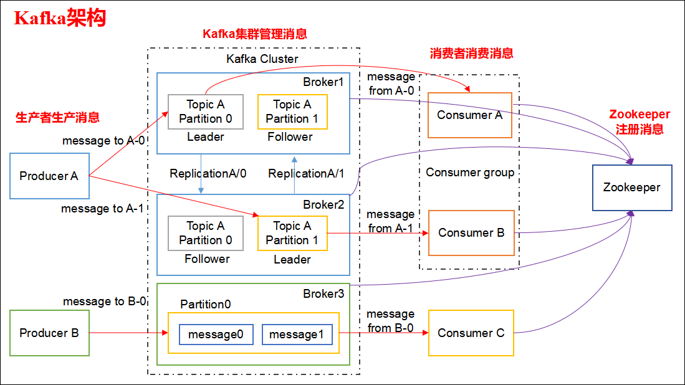

Kafka
1.Kafka都有哪些特点
- 高吞吐量、低延迟：kafka每秒可以处理几十万条消息，它的延迟最低只有几毫秒，每个topic可以分多个partition, consumer group 对partition进行consume操作。
- 可扩展性：kafka集群支持热扩展
- 持久性、可靠性：消息被持久化到本地磁盘，并且支持数据备份防止数据丢失
- 容错性：允许集群中节点失败（若副本数量为n,则允许n-1个节点失败）
- 高并发：支持数千个客户端同时读写
2.请简述下你在哪些场景下会选择 Kafka
- 日志收集：一个公司可以用Kafka可以收集各种服务的log，通过kafka以统一接口服务的方式开放给各种consumer，例如hadoop、HBase、Solr等。
- 消息系统：解耦和生产者和消费者、缓存消息等。
- 用户活动跟踪：Kafka经常被用来记录web用户或者app用户的各种活动，如浏览网页、搜索、点击等活动，这些活动信息被各个服务器发布到kafka的topic中，然后订阅者通过订阅这些topic来做实时的监控分析，或者装载到hadoop、数据仓库中做离线分析和挖掘。
- 运营指标：Kafka也经常用来记录运营监控数据。包括收集各种分布式应用的数据，生产各种操作的集中反馈，比如报警和报告。
- 流式处理：比如spark streaming和 Flink
3.Kafka 的设计架构你知道吗

Kafka 架构分为以下几个部分:
- Producer ：消息生产者，就是向 kafka broker 发消息的客户端。
- Consumer ：消息消费者，向 kafka broker 取消息的客户端。
- Topic ：可以理解为一个队列，一个 Topic 又分为一个或多个分区。
- Consumer Group：这是 kafka 用来实现一个 topic 消息的广播（发给所有的 consumer）和单播（发给任意一个 consumer）的手段。一个 topic 可以有多个 Consumer Group。
- Broker ：一台 kafka 服务器就是一个 broker。一个集群由多个 broker 组成。一个 broker 可以容纳多个 topic。
- Partition：为了实现扩展性，一个非常大的 topic 可以分布到多个 broker上，每个 partition 是一个有序的队列。partition 中的每条消息都会被分配一个有序的id（offset）。将消息发给 consumer，kafka 只保证按一个 partition 中的消息的顺序，不保证一个 topic 的整体（多个 partition 间）的顺序。
- Offset：kafka 的存储文件都是按照 offset.kafka 来命名，用 offset 做名字的好处是方便查找。例如你想找位于 2049 的位置，只要找到 2048.kafka 的文件即可。当然 the first offset 就是 00000000000.kafka。
4.Kafka 分区的目的
分区对于 Kafka 集群的好处是：实现负载均衡。分区对于消费者来说，可以提高并发度，提高效率。
5.你知道 Kafka 是如何做到消息的有序性
kafka 中的每个 partition 中的消息在写入时都是有序的，而且单独一个 partition 只能由一个消费者去消费，可以在里面保证消息的顺序性。但是分区之间的消息是不保证有序的。
6.kafka中consumer group 是什么概念
同样是逻辑上的概念，是Kafka实现单播和广播两种消息模型的手段。c
同一个topic的数据，会广播给不同的group；
同一个group中的worker，只有一个worker能拿到这个数据。
换句话说，对于同一个topic，每个group都可以拿到同样的所有数据，但是数据进入group后只能被其中的一个worker消费。group内的worker可以使用多线程或多进程来实现，也可以将进程分散在多台机器上，worker的数量通常不超过partition的数量，且二者最好保持整数倍关系，因为Kafka在设计时假定了一个partition只能被一个worker消费（同一group内）。
7.Kafka中的消息是否会丢失和重复消费
消息发送
Kafka消息发送有两种方式：同步（sync）和异步（async），默认是同步方式，可通过producer.type属性进行配置。 Kafka通过配置request.required.acks属性来确认消息的生产
- 0:生产者不会等待 broker 的 ack，这个延迟最低但是存储的保证最弱当 server 挂掉的时候就会丢数据
- 1：服务端会等待 ack 值 leader 副本确认接收到消息后发送 ack 但是如果 leader 挂掉后他不确保是否复制完成新 leader 也会导致数据丢失
- -1：同样在 1 的基础上 服务端会等所有的 follower 的副本受到数据后才会受到 leader 发出的 ack，这样数据不会丢失
综上所述，有6种消息生产的情况，消息丢失的场景：
acks=0，不和Kafka集群进行消息接收确认，则当网络异常、缓冲区满了等情况时，消息可能丢失； acks=1、同步模式下，只有Leader确认接收成功后但挂掉了，副本没有同步，数据可能丢失；
8.offset存储方式
- 1、在kafka 0.9版本之后，kafka为了降低zookeeper的io读写，减少network data transfer，也自己实现了在kafka server上存储consumer，topic，partitions，offset信息将消费的 offset 迁入到了 Kafka 一个名为__consumer_offsets 的Topic中。
- 2、将消费的 offset 存放在 Zookeeper 集群中。
- 3、将offset存放至第三方存储，如Redis, 为了严格实现不重复消费
9.ZooKeeper在Kafka中的作用是什么
Apache Kafka是一个使用Zookeeper构建的分布式系统。虽然，Zookeeper的主要作用是在集群中的不同节点之间建立协调。但是，如果任何节点失败，我们还使用Zookeeper从先前提交的偏移量中恢复，因为它做周期性提交偏移量工作。
待整理